The purpose of this tutorial is to demonstrate how to impose the deformation of domain boundaries using Lagrange multipliers. This functionality is required, e.g. when using (pseudo-)solid mechanics to update the shape of the fluid mesh in fluid-structure interaction problems, say. (See Comments and Exercises for a discussion of an alternative, somewhat easier method for imposing boundary displacements in single-physics solid mechanics problems).
The model problem
Here is a sketch of the model problem. A unit square is parametrised by two Lagrangian coordinates 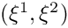. Three of the four boundaries are held in a fixed position while the square's upper boundary 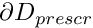 (which is parametrised by the boundary coordinate  ) is displaced to a new position given by 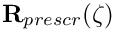:
) is displaced to a new position given by 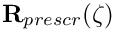:

Theory and implementation
We identify the upper boundary by writing the Lagrangian coordinates of points on 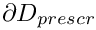 as
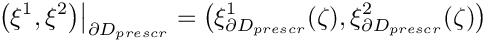
which allows us to write the displacement constraint as
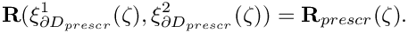
We enforce this constraint by augmenting the principle of virtual displacements, discussed in the solid mechanics theory tutorial, by a Lagrange multiplier term so that it becomes
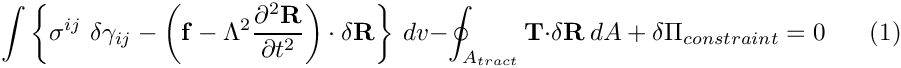
where
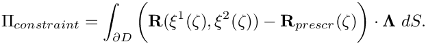
Here
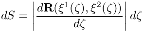
is the differential of the arclength along the domain boundary and the vector  (not to be confused with the scalar 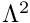 which represents the non-dimensional density in (1)!) is the Lagrange multiplier – the surface traction to be applied to to deform the boundary into the required shape.
(not to be confused with the scalar 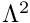 which represents the non-dimensional density in (1)!) is the Lagrange multiplier – the surface traction to be applied to to deform the boundary into the required shape.
We discretise this constraint by attaching FaceElements to the boundaries of the "bulk" solid elements that are adjacent to . We denote the number of nodes in these FaceElements by  and write the
and write the  -th component of the discrete Lagrange multiplier stored at node
-th component of the discrete Lagrange multiplier stored at node  as 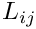. Thus the -th component of the Lagrange multiplier at local coordinate
as 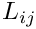. Thus the -th component of the Lagrange multiplier at local coordinate  in the element is given by
in the element is given by
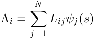
where 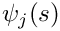 is the shape function associated with node .
Upon taking the variations of the discretised constraint with respect to the unknown nodal positions and the discrete Lagrange multipliers we obtain (i) additional contributions to the residuals of the "bulk" solid mechanics equations (these may be interpreted as the virtual work done by the boundary tractions required to impose the prescribed boundary displacement) and (ii) the equations that impose the displacement constraints in weak form.
The actual implementation of this approach in oomph-lib is best thought of as a generalisation of the SolidTractionElements that are used to impose a prescribed traction to the boundary of a solid domain. The main difference is that in the ImposeDisplacementByLagrangeMultiplierElement, the imposed traction is one of the unknowns in the problem and must be determined via the displacement constraint, using the approach described above. The element introduces additional unknowns (the nodal values of the Lagrange multiplier) into the problem, therefore the ImposeDisplacementByLagrangeMultiplierElement resizes (increases) the number of values stored at the node from the value that was originally assigned by the "bulk" solid element it is attached to. (If the elements are used in a single-physics solid mechanics problem the discrete Lagrange multipliers are the only nodal values in the problem since the unknown nodal positions are stored in a separate Data item; cf. "Solid mechanics: Theory and implementation" for more details). The prescribed boundary shape is provided by a GeomObject.
Results
The animation below shows the domain deformation in response to a prescribed boundary displacement given by
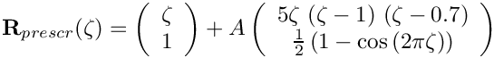
With this choice the upper boundary remains flat (i.e. at  ) when 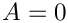. As
) when 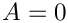. As  increases, the boundary is pulled upwards into a sinusoidal shape while simultaneously being pushed to the right. The vectors in the animation represent the Lagrange multipliers (i.e. the physical surface tractions) required to deform the domain into the required shape. Note how the automatic mesh adaptation refines the mesh in regions where the solid is strongly deformed.
increases, the boundary is pulled upwards into a sinusoidal shape while simultaneously being pushed to the right. The vectors in the animation represent the Lagrange multipliers (i.e. the physical surface tractions) required to deform the domain into the required shape. Note how the automatic mesh adaptation refines the mesh in regions where the solid is strongly deformed.

Describing the prescribed boundary motion with a GeomObject
Here is the implementation of the prescribed boundary shape as the WarpedLine, a two-dimensional GeomObject whose shape is parametrised by a single intrinsic coordinate.
Global parameters
As usual we define the problem parameters in a global namespace. We provide an instantiation of the GeomObject that defines the deformed boundary shape (setting its initial displacement amplitude to zero), and create an instance of oomph-lib's generalised Hookean constitutive equation with a Poisson ratio of 0.3 (recall that the use of the single-argument constructor for this constitutive equation implies that all stresses are non-dimensionalised on Young's modulus  ; see the solid mechanics theory tutorial for details).
; see the solid mechanics theory tutorial for details).
The driver code
We build an instantiation of the Problem class (described below), using nine-noded, two-dimensional RefineableQPVDElements to discretise the domain, and document the initial domain shape.
We perform a parameter study, increasing the amplitude of the prescribed boundary deflection in small increments, while allowing one mesh adaptation per solution.
Since the main use of the methodology demonstrated here is in free-boundary problems where the solution of the solid problem merely serves to update the nodal positions in response to the prescribed boundary motion, we re-set the nodes' Lagrangian coordinates to their Eulerian positions after every solve. This makes the deformed configuration stress-free and tends to stabilise the computation, allowing larger domain deformations to be computed. We stress, however, that this renders the computed solutions physically meaningless in the sense that the domain shapes no longer represent the solution of the original elasticity problem for which the stress-free, undeformed configuration remains unchanged throughout the body's deformation.
The Problem class
The definition of the Problem class follows the usual pattern. We provide an access functions to the bulk mesh, as well as a few private helper functions that attach and detach the ImposeDisplacementByLagrangeMultiplierElements from the bulk mesh before and after the mesh adaptation.
The Problem constructor
We start by creating the "bulk" mesh, discretising the domain with 5x5 elements of the type specified by the class's template argument.
Next we specify the error estimator, pass the pointer to the constitutive equation to the elements and perform one uniform mesh refinement:
We now create a new SolidMesh in which we store the elements that apply the displacement constraint. These elements are built (and added to the newly created SolidMesh) in the helper function create_lagrange_multiplier_elements(). Both meshes are then combined to the Problem's global mesh.
We pin the position of the nodes on all domain boundaries apart from the top boundary (boundary 2) and pin any redundant pressure degrees of freedom. (This is not strictly necessary in the present driver code since the displacement-based RefineableQPVDElements do not have any pressure degrees of freedom. However, it is good practice to do this anyway to guard against unpleasant surprises when the element type is changed at some point).
Finally, we assign the equation numbers and specify the output directory.
Actions before mesh adaptation
As usual, we remove the FaceElements that apply the displacement constraints before the bulk mesh is adapted.
Actions after mesh adaptation
We re-attach the FaceElements that apply the displacement constraints once the bulk mesh has been adapted. Since the hanging status of nodes in the bulk mesh can change during the mesh adaptation it is again good practice to pin any nodal solid pressure values that may have become redundant.
Creating the Lagrange multiplier elements that impose the displacement constraint
The creation of the Lagrange multiplier elements that impose the displacement constraint follows the usual pattern. We loop over the "bulk" solid elements that are adjacent to mesh boundary 2 and attach ImposeDisplacementByLagrangeMultiplierElements to the appropriate faces.
Next we loop over the newly-created
ImposeDisplacementByLagrangeMultiplierElements and specify the GeomObject that defines the imposed boundary displacements. We also specify which boundary of the bulk mesh the ImposeDisplacementByLagrangeMultiplierElements are located on. This is required to enable the ImposeDisplacementByLagrangeMultiplierElements to extract the appropriate boundary coordinate from its constituent nodes. (We discussed elsewhere that boundary coordinates are usually defined (and passed to the nodes) when the nodes are first created, typically during the construction of the bulk mesh. Since nodes can be located on multiple domain boundaries, each boundary coordinate is associated with a particular boundary number. Passing this number to the ImposeDisplacementByLagrangeMultiplierElements allows them to obtain the correct boundary coordinate from the node.)
Finally, we impose boundary conditions for the Lagrange multipliers. Their values must be pinned (and set to zero) at the left and right ends of the upper mesh boundary (boundary 2), since the displacement of the nodes at these points is already enforced by the boundary conditions imposed at the left and right vertical boundaries (boundaries 1 and 3).
We discussed above that the discrete Lagrange multipliers are added to any already existing nodal degrees of freedom when the ImposeDisplacementByLagrangeMultiplierElements are attached to the faces of the "bulk" solid elements. The number of nodal values that were stored at an element's j -th node before the additional nodal values were added, can be obtained from the function nbulk_value(j), defined in the FaceElement base class. We pin the Lagrange multipliers at the "corner nodes" by looping over all nodes in the ImposeDisplacementByLagrangeMultiplierElements and pinning the additional nodal values of any nodes that are located on mesh boundaries 1 or 3.
Deleting the Lagrange multiplier elements that impose the displacement constraint
The function delete_lagrange_multiplier_elements() deletes the Lagrange multiplier elements that impose the displacement constraint and flushes the associated mesh.
Post-processing
The function doc_solution() outputs the shape of the deformed body and the Lagrange multiplier along the upper boundary.
Comments and Exercises
Comments
As mentioned in the introduction, there is an alternative, much simpler way of imposing prescribed boundary motions which does not require Lagrange multipliers: Pin the nodal positions of all nodes on and update their positions manually before calling the Newton solver, e.g. by changing the actions_before_newton_solve() function to
This approach is implemented in the alternative driver code prescribed_displ_lagr_mult2.cc.
Exercises
- In order to familiarise yourself with the details of how
FaceElementsadd additional nodal values to the nodes they are attached to, output the values ofn_bulk_valueandnvalin the loop that pins the Lagrange multipliers increate_lagrange_multiplier_elements(). Explain why, for theRefineableQPVDElement<2,3>used here, we haven_bulk_value= 0. What happens if you use elements of typeRefineableQPVDElementWithContinousPressure<2>instead?
- Comment out the call to
set_lagrangian_nodal_coordinates()after the solve and compare the robustness of the computation and the resulting domain shapes. [Hint: You will have to reduce the increment for the amplitude of the prescribed boundary deflection to 0.025 or less, otherwise the Newton iteration will diverge very rapidly.]
- Explore the performance of the alternative driver code (without the use of Lagrange multipliers) prescribed_displ_lagr_mult2.cc and explain why it is less robust than the version with Lagrange multipliers (in the sense that the increment in the amplitude of the prescribed boundary displacement has to be reduced significantly to keep the Newton method from diverging). Hint: Compare the domain shapes before the call to the Newton solver.
- Omit the specification of the boundary number in the bulk mesh by commenting out the call to
set_boundary_number_in_bulk_mesh(...)in the functioncreate_lagrange_multiplier_elements(). Check what happens when the code is compiled with and without thePARANOIDflag.
PDF file
A pdf version of this document is available.